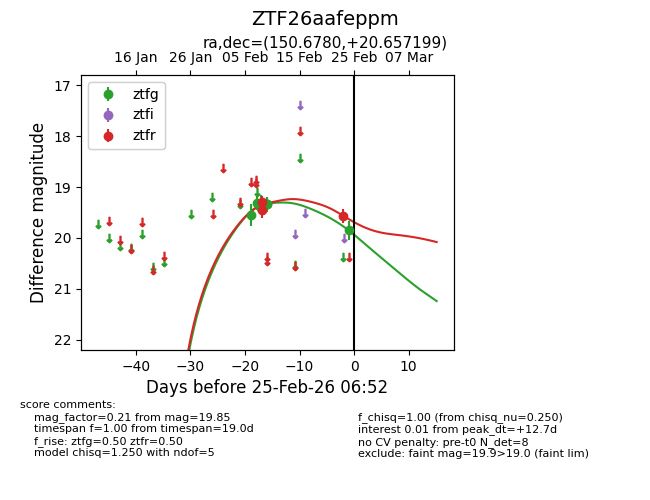
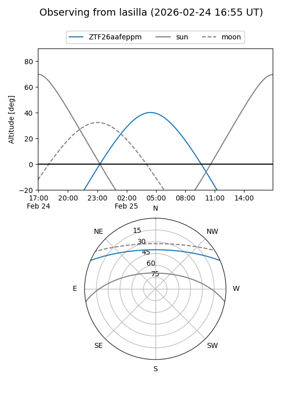
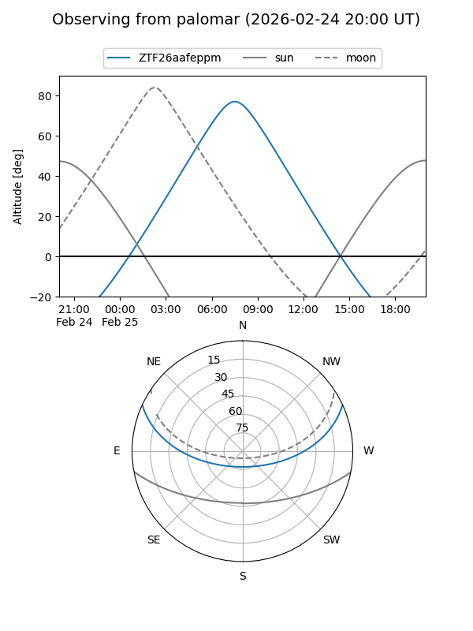
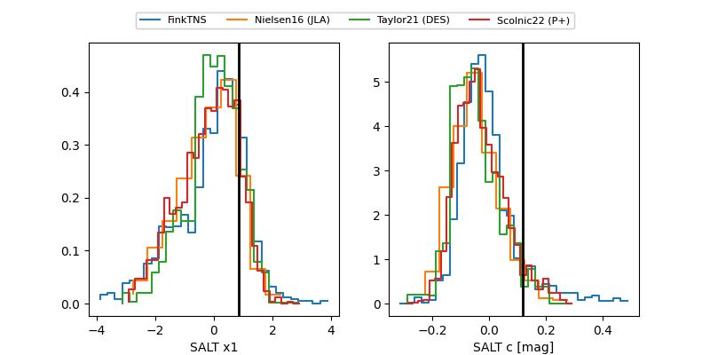

ZTF26aafeppm
Target ZTF26aafeppm at 2026-02-25 06:53
Aliases and brokers:
FINK: link
Lasair: link
ALeRCE: link
alt names
ZTF26aafeppm (ztf,fink_ztf)
Coordinates:
equatorial (ra, dec) = 150.6780,+20.65720
equatorial (HMS+DMS) = 10:02:42.71,+20:39:25.92
galactic (l, b) = (213.1329,+51.07414)
Flags:
Photometry:
last ztfg=19.85, ztfr=19.56
7 ztfg, 3 ztfr detections
Lightcurve

Visibility


Additional plots
